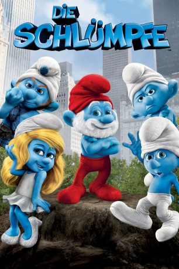

#706 Die Schlümpfe 1
Alternativ: The Smurfs
 
 IMDB-Wertung: 5.5 / 10
IMDB-Wertung: 5.5 / 10  Metascore: 30
Metascore: 30 
Seit jeher versucht der böse Zauberer Gargamel, die Schlümpfe endgültig zu vernichten. Als Gargamel die winzigen blauen Wesen aus ihrem Dorf verjagt, purzeln diese aus ihrer magischen Welt in die reale. Sie landen mitten im Central Park von New York. Dort versuchen die Schlümpfe wieder in ihr Dorf zurückzukommen. Doch Gargamel ist ihnen bereits auf den Fersen ...
Jahr: 2011
Dauer: 103 Minuten
FSK: 0
Land: USA Studio: Columbia PicturesTonspuren: DTS - ,
Untertitel: Deutsch,
Auflösung: 1080p (1920x1080) Größe: 11264 MB
Genre: Animation/Trick, Abenteuer, Komödie, Familie, Fantasy
Regisseur:  Raja Gosnell
Raja Gosnell
Drehbuch: J. David Stem, David N. Weiss, Jay Scherick, David Ronn, J. David Stem
Soundtrack: Heitor Pereira
Darsteller:
Datei: X:\Kinder Collections\Schlümpfe\Schlümpfe 1, Die (2011, FSKo.Al., 1920x1080).mkv seit 16.03.2015
Festplatte: Kinder-Filme+Trick
 Es gibt insgesamt 9 Filme in der Gruppe 'Kinder Collections\Schlümpfe'
Es gibt insgesamt 9 Filme in der Gruppe 'Kinder Collections\Schlümpfe'